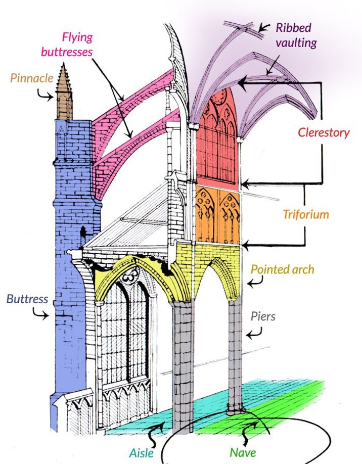
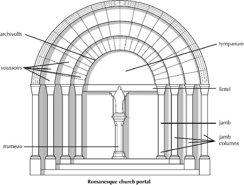
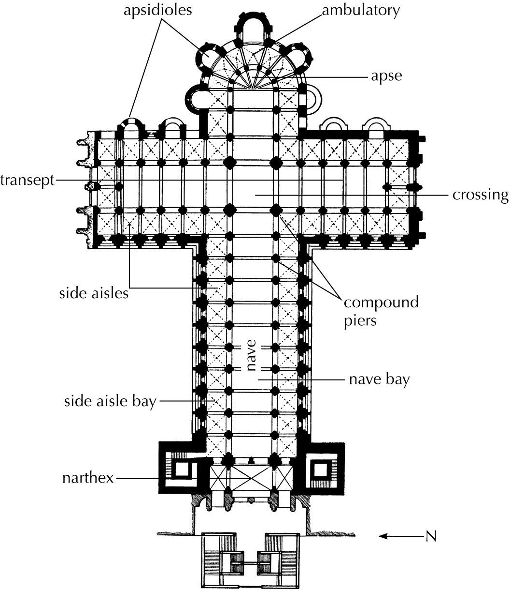

Islamic Art:
- Convivencia: The period of coexistence and cultural exchange between Christians, Muslims, and Jews in medieval Spain.
- Abd al-Rahman: A member of the Umayyad dynasty who founded the Emirate of Córdoba in Spain, establishing a significant Islamic political and cultural center in the Iberian Peninsula; his reign is particularly noted for the construction and expansion of the Great Mosque of Córdoba, a landmark of Islamic architecture.
- Mihrab: A semicircular niche set into the qibla wall of a mosque.
- Minaret: A distinctive feature of mosque architecture, a tower from which the faithful are called to worship.
- Aniconism: The practice of avoiding visual representations of deities or religious figures.
- Calligraphy: Greek, “beautiful writing.” Handwriting or pen- manship, especially elegant writing as a decorative art.
The Early Middle Ages:
- Ship burial: A burial practice where a deceased person is placed inside a boat or ship, which is then buried in the ground, often accompanied by grave goods.
- Zoomorphic: Human or animal representations in art.
- Interlace pattern: A braid-like decorative motif commonly found in medieval art, where bands or lines are intricately woven and intertwined, creating a complex network of loops and knots.
- Charlemagne: Frankish ruler who significantly fostered a cultural revival known as the "Carolingian Renaissance" during his reign, marked by a renewed interest in classical art, literature, and learning; the key figure in beginning European art and culture.
- Ottonians: Art style that flourished in Europe during the 10th and 11th centuries under the rule of the Ottonian dynasty, characterized by a blend of Byzantine, Carolingian, and Romanesque influences, often seen in grand, monumental religious works like illuminated manuscripts, metalwork, and architecture, with a focus on expressing imperial power and religious devotion through rich imagery and intricate details.
- Renovatio imperii Romani: Means ‘renewal of the Roman Empire’ which was Charlemagne’s goal.
Romanesque:
- Nave: The central area of an ancient Roman basilica or of a church, demarcated from aisles by piers or columns.
- Aisle: The portion of a basilica flanking the nave and separated from it by a row of columns or piers.
- Apse: A recess, usually semicircular, in the wall of a building, commonly found at the east end of a church.
- Radiating Chapels: In medieval churches, chapels for the display of rel- ics that opened directly onto the ambulatory and the transept.
- Ambulatory: A covered walkway, outdoors (as in a church cloister) or indoors; especially the passageway around the apse and the choir of a church. In Buddhist architecture, the passageway leading around the stupa in a chaitya hall.
- Narthex: A porch or vestibule of a church, generally colonnaded or arcaded and preceding the nave.
- Transept: The part of a church with an axis that crosses the nave at a right angle.
- Clerestory: The fenestrated part of a building that rises above the roofs of the other parts. The oldest known clerestories are Egyp- tian. In Roman basilicas and medieval churches, clerestories are the windows that form the nave’s uppermost level below the timber ceiling or the vaults.
- Mosaic: Patterns or pictures made by embedding small pieces (tes- serae) of stone or glass in cement on surfaces such as walls and floors; also, the technique of making such works.
- Cruciform: Cross-shaped.
- Codex: Separate pages of vellum or parchment bound together at one side; the predecessor of the modern book. The codex superseded the rotulus. In Mesoamerica, a painted and inscribed book on long sheets of bark paper or deerskin coated with fine white plaster and folded into accordion-like pleats.
- Illuminated Manuscript: A luxurious handmade book with painted illustrations and decorations.
- Vellum: Calfskin prepared as a surface for writing or painting.
- Pilgrimage: A journey undertaken to a sacred place of religious significance, often involving travel to a specific site considered holy within a particular faith, with the purpose of devotion and spiritual renewal
- Mandorla: An almond-shaped nimbus surrounding the figure of Christ or other sacred figure.
- Tympanum: The space enclosed by a lintel and an arch over a doorway.
- Trumeau: In church architecture, the pillar or center post supports the lintel in the middle of the doorway.
- Jamb: In architecture, the side posts of a doorway.
- William the Conqueror: Key political figure in the French Gothic Architectural style.
Gothic:
- Opus modernum: Latin, “modern work.” The late medieval term for Gothic art and architecture. Also called opus francigenum.
- Abbot Suger: Right hand man of Louis VI, rebuilt the French royal abbey church at Saint-Denis with stained-glass windows and rib vaults on pointed arches.
- Lux nova: Latin, “new light.” Abbot Suger’s term for the light that enters a Gothic church through stained-glass windows.
- Rib Vault: A vault in which the diagonal and transverse ribs compose a structural skeleton that partially supports the masonry web between them.
- Flying Buttress: An exterior masonry structure that opposes the lateral thrust of an arch or a vault. A pier buttress is a solid mass of masonry. A flying buttress consists typically of an inclined mem- ber carried on an arch or a series of arches and a solid buttress to which it transmits lateral thrust.
- Triforium: In a Gothic cathedral, the blind arcaded gallery below the clerestory; occasionally, the arcades are filled with stained glass.



Introduction
- Was a German philosopher.
- Leisure: Idea of not being engaged in an activity or work.
- Peiper is closer to Plato than Nietzsche.
Chapter 1: in the Philosophical Act (p. 77-92).
- Three main points.
- Defining Philosophy and the Philosophical Act: to philosophize is to act in such a way that one steps out of the workaday world (p. 77).
- Similar to Dr. Thomas’ “aim” of philosophy to understand the order and the mystery of reality—but does your mind have time to question the world if it’s preoccupied with “daily” matters like fixing a car or getting groceries?
- What does Peiper mean by the “Workaday world”: “The workaday world is the world of work, the utilitarian world, the world of the useful, subject to ends, open to achievement and subdivided according to functions; it is the world of demand and supply, of hunger and satiety. It is dominated by a single end: the satisfaction of the “common need” (p. 78).
- Basically, it’s the everyday world we live in—very important to know that Pieper ISN’T saying the world of work is evil and the world of philosophy is good.
- Pieper’s culturally a christian and a catholic.
- So he’s very conscious of the traditions he’s coming out of; the world he’s in isn’t inherently evil or something to reject, he just knows there is MORE out there than his current reality.
- Pieper might agree with Nietzsche that other philosopher’s who are critical of the world are harmful, but he would believe Nietzsche misunderstands what philosophers are and stand for (especially those coming from Christian standpoints).
- The workaday world isn’t bad—it’s how we can find our means to eat, to shelter ourselves, and it’s in our nature to seek “culture” (a common effort of creating a community or society to support ourselves and meet our needs).
- Ex: Some of us are able to meet our own needs, but others lack the knowledge of how (i.e building their own house, gathering their own food). So of course we need specialization in our communities, and that requires work.
- But what’s the “satisfaction of the common need”? What is the common need?
- Common need: Human beings’ need for food, shelter, clothing, and social stability (laws, education, government).
- Pg. 78: “Work is the process of satisfying the “common need”—an expression that is by no means synonymous with the notion of “common good”. The “common need” is an essential part of the “common good”; but the notion of “common good” is far more comprehensive. For example, the “common good” requires (as Aquinas says) that there should be men who devote themselves to the “useless” life of contemplation, and, equally, that some men should philosophize.—whereas it could not be said that contemplation or philosophy helps to satisfy the “common need””
- “More and more, at the present time, “common good” and “common need” are identified; and (what comes to the same thing) the world of work is becoming our entire world; it threatens to engulf us completely, and the demands of the world of work become greater and greater, till at last they make a “total” claim upon the whole of human nature.”
- Pieper is not trying to say a work-focused person or society is bad—work is a necessary ingredient for human beings to support themselves in life. However, Pieper is trying to say the common need is not the same as the common good.
- Common good is that which allows human beings to flourish and actualize their potentialities and happiness for human living; work is a necessary condition for human life but it shouldn’t engulf our whole attitude or lives.
- We need breaks from our work. Sure, we work, but we don’t always want to work.
- Usually in historical cultures there are community holidays that do offer a break for spiritual development or personal recovery; secularized cultures like “ours” are losing that.
- Holiday comes from “holy day” where you take a break from work and participate in the higher life through religious services.
- What’s meant by “stepping beyond the workaday world?”
- Pg. 80: “...just try to imagine that all of a sudden, among the myriad voices in the factories and on the market square (Where can we get this, that or the other?)—that all of a sudden among those familiar voices and questions another voice were to be raised, asking: “Why, after all, should there be such a thing as being? Why not just nothing?”—the age-old, philosophical cry of wonder that Heidegger calls the basic metaphysical question! Is it really necessary to emphasize how incommensurable philosophical inquiry and the world of work are? Anyone who asked that question without warning in the company of people whose minds hinge on necessities and material success would most likely be regarded as crazy. It is, however, in extreme cases such as this that the whole extent of the contrast comes to light: and then it is clear that the question transcends the workaday world and leads beyond it.”
- There’s a difference between philosophical questions and practical ones—the question “should we raise taxes, should we put money toward x or y” when it becomes “what is the point of it all” it might not give you an answer.
- Pg. 80: “A properly philosophical question always pierces the dome that encloses the bourgeois workaday world, though it is not the only way of taking a step beyond that world. Poetry no less than philosophy is incommensurable with it.”
- The philosophical question of why there is something rather than nothing breaks through the workaday world—ultimately, human beings want things that are good, and even if we don’t know what these things are, we want them to be authentic and true.
- Human beings are also attracted to beautiful things (poetry); i.e forgiveness, care, not just physical beauty but…
- Philosophy is here to help us find what is truly good, truly beautiful, and truly true.
- We have these needs around us, but once we take a break we can think about our lives a little bit—throughout human history we found these reprieves in religion, like festivals, prayer, art (for the sake of art not money), and philosophy.
- And all of these break the dome of the workaday world.
- Existential shocks — unpredictable breaks that separate you from the workaday world, not a particular activity we engage in but something that shakes us and makes us reconsider what’s important in life, i.e falling in love, having a child.
- Existential shocks usually make us go, “Oh, this thing I thought I always wanted/needed… I don’t really.” Or, just, “I took this little thing for granted, but I couldn’t see it before without this happening to me.”
- Existential shocks lead to us philosophizing and opening our awareness.
- We need existential shocks to happen to us so that we can have these revelations, grow from them, or learn to appreciate what we’ve kept from them.
- When the dome is broken (whether from existential shocks or philosophical questions) we can try to steal the “dome” back up in one of two ways:
- Turn the existence of the good, authentic, and beautiful things (art, religion, philosophy) into serving the needs of the workaday world.
- Ex: God exists to answer my material prayers.
- Turn the existence of the good, authentic, and beautiful things into “preparation” for the workaday world.
- Ex: I pray to calm myself down and return to work. Or I should enjoy this vacation so I can come back after the break and work even harder.
- Doing this just seals you further into the workaday world.
- Pg. 90, what it means to step out of this workaday world: “To philosophize is the purest form of speculari, of theorein, it means to look at reality purely receptively.”
- Speculari is, in latin, for “speculate.”
- Purely receptively is to look out at the world and ask yourself, “What do I see?” “What am I experiencing right now?”
- Ex: When looking at a tree you don’t just see it as a tree but ask, what kind is it? How could it have gotten there?
- Pg. 90, still: “...in such a way that things are the measure and the soul is exclusively receptive. Whenever we look at being philosophically, we discourse purely “theoretically” about it, in a pure manner, that is to say, untouched in any way whatsoever by practical considerations, by the desire to change it; and it is in this sense that philosophy is said to be above any and every “purpose.”
- Philosophy being above every and any purpose is just that philosophy cannot be put to use for something—it isn’t supposed to be practical, there is meant to be a divide between the two.
Chapter 2: in the Philosophical Act (p. 92-??).
- If Philosophy is taking a step beyond the working world, and if the working world (workaday world) is satisfying the common need, then what goes on beyond that world?
- Religion, Art, Philosophy, Existential Shocks.
- This disrupts our workaday world because we’re seeing things in a deeper manner than the material one of the workaday world.
- Pieper defines the world as a “sphere of relationships” and makes a distinction between the world and an environment; everything has an environment but not everything has a world.
- There are levels and depths to the world we’re able to experience.
- To have a world you have to be a living being.
- First criteria: You need to be able to have and build relationships.
- A rock would have an environment but it wouldn’t be able to have a world because all of its relationships i.e with the other rocks in the same pile are purely spatial. No meaning, no connection, nothing.
- A flower on the other hand has a relationship with the sun and soil; it needs those to develop and grow and in that there’s meaning—so therefore, a life and therefore a world.
- The higher the being the wider the deeper the world because the higher you are the more relationships are possible.
- Because we are able to establish a field of relationships—because we are alive—
- and because we (humans) have a greater degree or a higher degree of being by being endowed with reason (we can think and reflect) and we also have free will (that’s against what Nietzsche would say) we can choose to search for the good the true, or the beautiful—or we can choose not to.
- And this choice all comes from the power of establishing relationships with a ‘greater degree of inwardness’ which suggests human beings are different from other animals.
- That human beings have a unique position in the world to think about and interact with other human beings to try to maintain that which is good in the world and to the extent that you can to further it or or to to grow it.
- To the extent we can to mitigate the wrongs and the injustices that exist in the world okay and that's because we're a different type of being.
- But this degree of inwardness a human being can choose to repress or shut down. They can kind of atrophy that inwardness by enclosing themselves in nothing but a world of need.
- Sometimes people are in that state of atrophy because of circumstances of poverty, or maybe if they're living in a place where they're unable to take time to reflect—these circumstances are hardly of their own doing but it does have an impact
- And there are also people who make that decision themselves—all they want to see is through their little pinhole and it's all about making money and having power, position, and fame and anything that doesn't serve that is unimportant (art, goodness, beauty, philosophy).
- And that pinhole is keeping them from reaching their fullest potential—this sentiment Pieper, Nietzsche and Plato would all agree on.
In summary: